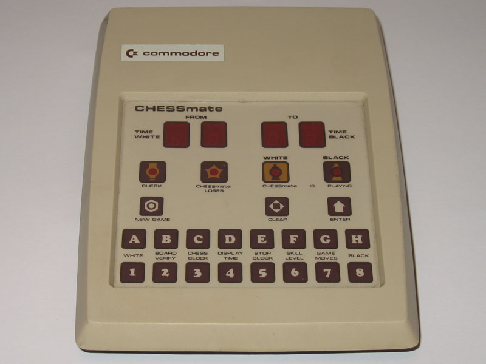

Commodore CHESSmate
A chess computer with no board — you play blindfold, typing moves as algebraic coordinates into a calculator-style keypad

Overview
The Commodore CHESSmate is the purest expression of 'blind' computer chess: the machine has no chessboard, no graphical display, and no pressure-sensing squares. Instead, a 19-key membrane keypad (labeled A-H and 1-8, plus NEW GAME, CLEAR, ENTER) is used to type moves in algebraic notation — E2, then E4. Four 7-segment LED digits in two groups show the FROM and TO squares, and four dome LEDs indicate CHECK, CHESSmate LOSES, IS PLAYING WHITE, and IS PLAYING BLACK. The player must hold the entire game state in the head, or keep a physical board beside the machine. Chess is reduced to coordinate entry.
It was developed by Peter Jennings, author of the seminal KIM-1 Microchess program (1976), under contract to Commodore. Jennings was recruited by MOS Technology founder Chuck Peddle at the August 1977 Personal Computing Show; the machine ran on a 6504 CPU (a 28-pin 6502) with a 6530 RIOT and a 6332 ROM containing Microchess 1.5, and offered 8 levels of play. A remarkable footnote: in February 1978, world champion Bobby Fischer called Jennings to play Microchess over the phone, then visited him in Pasadena in March 1978 to spend three days playing the CHESSmate prototype against his own Boris chess computer.
### A machine that asks you to imagine the board
Where sensory-board chess computers let you place a piece and press down, the CHESSmate has no board at all. You type a move as from-square/to-square and the machine answers on the same two groups of digits. This is the interface minimalism of a calculator applied to chess: the whole game compressed into coordinate entry and a four-digit echo. It is the museum's clearest 'you must hold the state in your head' interface.
### The Microchess lineage
The CHESSmate is the physical incarnation of one of the first commercially successful microcomputer chess programs. Microchess 1.5 — the engine that had already sold thousands of copies to KIM-1 owners — lives in the CHESSmate's ROM. The hardware design later influenced the Novag Chess Champion MK II, which used the same 6530 RIOT chips and, upon examination, the same code, leading to a CompuChess lawsuit. In 2024, Michael Gardi began building a replica CHESSmate, keeping the interaction model alive.
Deep dive
Team & pioneers
- Peter Jennings. Programmer and hardware designer; creator of the KIM-1 Microchess program.
- Chuck Peddle. MOS Technology founder who recruited Jennings at the 1977 Personal Computing Show.
- Jack Tramiel. Commodore founder; approved the product after a New Year's Eve 1977 demonstration.
- Bobby Fischer. World champion who played the CHESSmate prototype and considered — then declined — an endorsement.